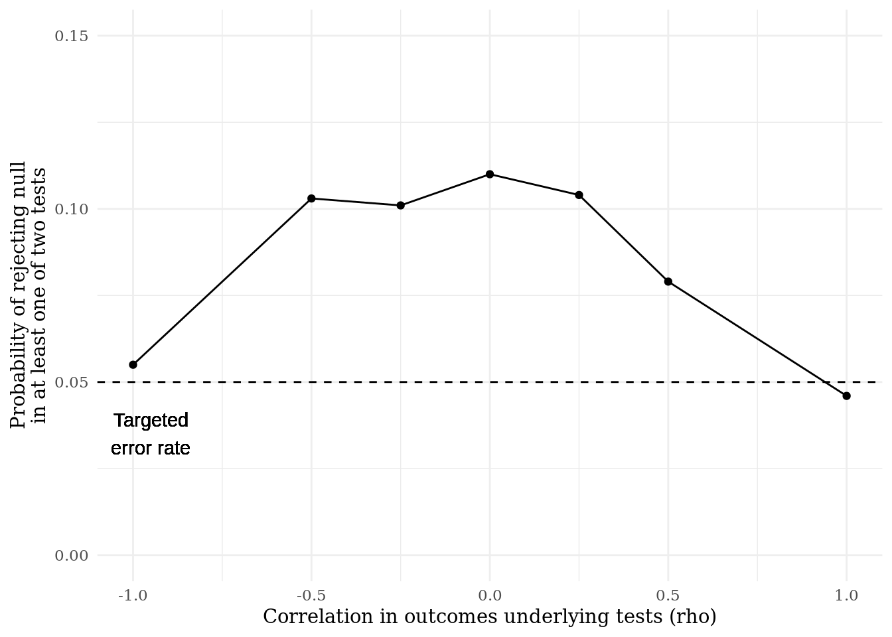

18.5 Use a null model to correct for multiple comparisons easily and exactly
18.5.1 The problem of confidence in multiple tests
Using \(p\)-values to make inferences about effects is essentially an exercise in risk management: when we stipulate a “confidence level” below which we consider a \(p\)-value statistically significant – often referred to as \(\alpha\) (alpha) – we are saying how comfortable we are inferring that there’s an effect when there actually isn’t one. A researcher who tells you that her confidence level is .05 is telling you that, in a world where there’s no effect, she’s willing to accept a 5% chance of wrongly inferring that there is one. The problem is that, often, the level of risk we say we’re willing to take on in principle doesn’t actually correspond to the level of risk we take on in practice. We’re often at a higher risk of false positives than we realize.
To see this point, let’s a design based on a null model with two variables that are possibly correlated by rho.
rho <- 0
design <- declare_population(N = 200,
Y1 = rnorm(N),
Y2 = rnorm(n = N,mean = Y1 * rho,
sd = sqrt(1^ 2 - rho ^ 2))) +
declare_assignment(prob = .5) +
declare_estimator(Y1 ~ Z, label = "Y1") +
declare_estimator(Y2 ~ Z, label = "Y2") We specify that we’re willing to falsely infer that there’s an effect 5% of the time.
Then, we simulate the design hundreds of times. Every time we see that the \(p\)-value from one of our tests falls below \(\alpha\), we infer (falsely) that there’s an effect. This happens due to random chance.
And guess what, we do that about 5% of the time!
## [1] 0.051So far so good, right? Not so fast. While the probability that any test in our study falsely rejects the null corresponds to the \(\alpha\) we specified, the probability that our study rejects a null might not. Let’s take a look at how often the design rejects any null among the two tests:
simulations %>%
group_by(sim_ID) %>%
summarize(family_rejection = any(test_rejection)) %>%
with(., mean(family_rejection))## [1] 0.102Whoa – we’re finding erroneous significant effects at twice the rate we said we were comfortable with! That’s because we took two independent shots at finding a significant effect, each of which had a 5% chance of success. This is what we call the “family-wise error rate:” it’s the probability that we find any significant effects in a family of tests, given that the “global null” of no effects for any units on any outcome is true.
18.5.2 Independence makes things worse, dependence makes things better
It’s not hard to see that the problem gets worse when you add more tests. If you run ten independent tests when the global null is true, then the probability that they all fail to reject the null at \(\alpha = .05\) is \(95\%^{10} \approx 60\%\). In other words, you’re falsely inferring there’s at least one significant effect 40% of the time!
More subtley, the problem is less bad when tests are correlated, in the sense that if one comes up null the other is also more likely to come up null. This happens, for example, when tests are very similar: say, one test is the bivariate correlation between \(Z\) and \(Y\), and another test is the correlation between \(Z\) and \(Y\), holding \(X\) constant. It also happens if the outcomes themselves are correlated. Let’s see how the true family error rate changes as the correlation in our two outcomes in our null design varies from -1 to 1.

The risk of at least one false positive is highest when the tests are independent, and lowest when it is dependent. For some intuition, think about the case when the tests are effectively equivalent (\(\rho = 1\)). In that case, it’s as though you only ran one test, so you’re only taking one bite at the apple.
18.5.3 Correcting for multiple comparisons
The problem we’ve described — that the risk of a false positive in a group of tests is often higher than the nominal risk of false positives being used at the test-level – is well-known and is often dealt with through “multiple comparisons correction.”
Most infamous of these methods is the Bonferroni correction, which is often applied to \(p\)-values, under the assumption of independence in the tests. But, due to concerns that the method is overly conservative, various others have been developed.
In our next set of simulations, we’ll declare a design in which we estimates effects, adjust our \(p\)-values or test-wise \(\alpha\), and then report whether we found at least one significant effect. We’ll use two kinds of approaches to looking for significant effects.
In the first, we’ll imploy one of the four main “analytic” methods for p-value adjustment available through the p.adjust function in R.
analytic_correction <- function(data,method){
get_estimates(design = design, data = data) %>%
mutate(reject = p.adjust(p = p.value,method = method) < .05) %>%
summarize(any_reject = any(reject))
}Our design is going to draw data from the design above, at a level of rho we set below, then it is going to estimate effects, adjust for multiple comparisons, and reject hypotheses with an aim to get a true family-wise error rate of .05.
new_rho <- .95
correction_design <-
declare_population(data = draw_data(redesign(design, rho = new_rho))) +
declare_estimator(handler = tidy_estimator(analytic_correction), method = "bonferroni", label = "bonferroni") +
declare_estimator(handler = tidy_estimator(analytic_correction), method = "holm", label = "holm") +
declare_estimator(handler = tidy_estimator(analytic_correction), method = "hochberg", label = "hochberg") +
declare_estimator(handler = tidy_estimator(analytic_correction), method = "hommel", label = "hommel") get_alpha_per_family <- function(test_alpha, simulations){
simulations %>%
mutate(test_rejection = p.value < test_alpha) %>%
group_by(sim_ID) %>%
summarize(family_rejection = any(test_rejection)) %>%
with(., mean(family_rejection))
}
get_testwise_alpha <- function(data, target_alpha = .05, sims = 100){
design <- declare_population(data = data) +
declare_assignment(prob = .50) +
declare_estimator(Y1 ~ Z,label = "Y1") +
declare_estimator(Y2 ~ Z,label = "Y2")
simulations <- simulate_design(design, sims = sims)
alpha_per_tests <- seq(.001,.10,.001)
alpha_per_familys <- sapply(alpha_per_tests, get_alpha_per_family,simulations = simulations)
dist_from_goal <- (alpha_per_familys - target_alpha)^2
return(max(alpha_per_tests[which.min(dist_from_goal)]))
}
simulation_correction <- function(data){
simulated_alpha <- get_testwise_alpha(data)
get_estimates(design = design, data = data) %>%
mutate(reject = p.value < simulated_alpha) %>%
summarize(any_reject = any(reject))
}
correction_design <- correction_design +
declare_estimator(handler = tidy_estimator(simulation_correction), label = "simulation") | Design Label | Estimator Label | N Sims | Family Error Rate |
|---|---|---|---|
| correction_design | bonferroni | 1000 | 3.50 |
| (0.61) | |||
| correction_design | hochberg | 1000 | 4.10 |
| (0.65) | |||
| correction_design | holm | 1000 | 3.50 |
| (0.61) | |||
| correction_design | hommel | 1000 | 4.10 |
| (0.65) | |||
| correction_design | simulation | 1000 | 5.20 |
| (0.69) |